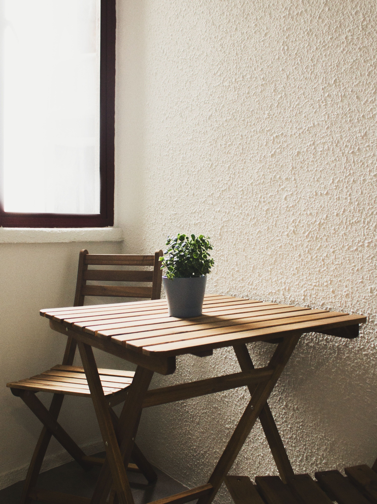
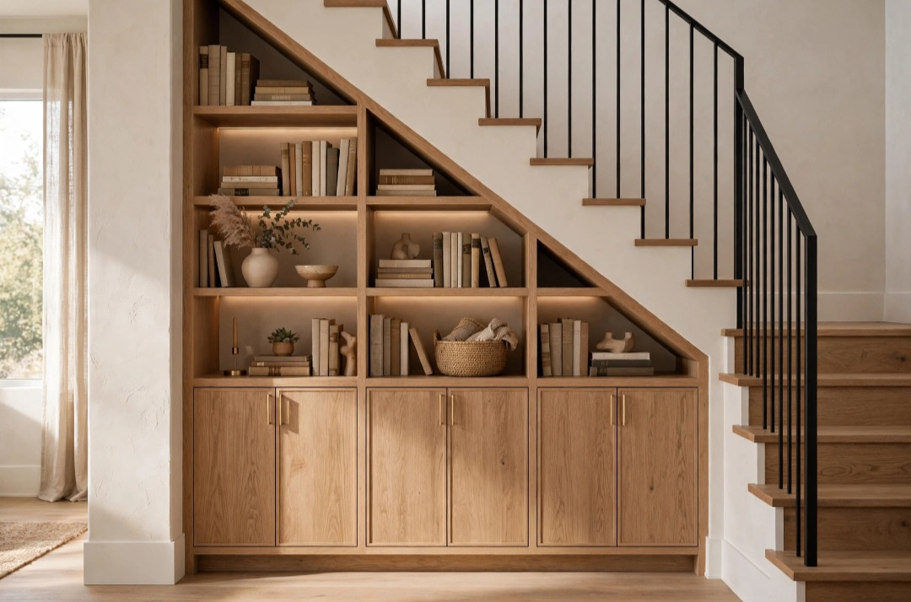

En este artículo
Introducción
Guía práctica sobre cómo elegir la mejor ubicación para un rincón de lectura con criterios de proporción, funcionalidad, mantenimiento y decoración para tomar decisiones más acertadas en casa.
Tomar una buena decisión empieza por observar el espacio real, sus medidas, la luz disponible y la forma en que se utiliza cada día. Esta guía desarrolla los criterios principales para elegir con más seguridad y evitar cambios innecesarios.
Busca una buena relación con la luz natural
La ubicación ideal combina luz, tranquilidad y comodidad. Una ventana puede ser excelente durante el día, siempre que el sol directo no produzca calor o reflejos molestos.
Antes de comprar o modificar nada, mide y observa el espacio durante varios momentos del día. La luz natural, los recorridos y los hábitos cotidianos ofrecen información que una fotografía no muestra. Anota las necesidades principales y ordénalas por importancia.
Trabajar por etapas reduce errores. Resuelve primero función y seguridad; después color, textura y detalles. Una vez realizado un cambio importante, úsalo durante varios días antes de añadir otra cosa. Así resulta más fácil identificar qué mejora realmente el ambiente.
Una decisión acertada debe relacionarse con el resto del ambiente. Observa materiales, colores, dimensiones y elementos que permanecerán. No hace falta que todo coincida exactamente: repetir uno o dos rasgos crea una relación suficiente y evita un resultado rígido.
Prueba siempre que sea posible antes de comprometerte. Muestras, plantillas de papel, cinta en el suelo o una configuración temporal permiten comprobar proporciones y comodidad. Esta fase de prueba suele evitar devoluciones y trabajos innecesarios.
Finalmente, piensa en cómo cambiará la solución con el tiempo. La luz, las estaciones, el desgaste y las necesidades de la familia pueden modificar la forma de utilizar el espacio. Elegir con cierto margen de adaptación hace que el resultado dure más.
Prioriza comodidad y postura
El asiento debe permitir una postura cómoda durante el tiempo que realmente lees. Considera respaldo, altura, apoyo de brazos y espacio para cambiar de posición.
El presupuesto también forma parte del proyecto. Establece una cantidad máxima y prioriza elementos que se utilizan a diario. Varias compras pequeñas realizadas por impulso pueden costar más que una solución duradera y adecuada.
Reutilizar lo existente es una herramienta válida. Cambiar una pieza de lugar, limpiar, reparar o combinarla de otra manera puede transformar el resultado sin aumentar la cantidad de objetos. La decoración más coherente no siempre es la que incorpora más novedades.
Una decisión acertada debe relacionarse con el resto del ambiente. Observa materiales, colores, dimensiones y elementos que permanecerán. No hace falta que todo coincida exactamente: repetir uno o dos rasgos crea una relación suficiente y evita un resultado rígido.
Prueba siempre que sea posible antes de comprometerte. Muestras, plantillas de papel, cinta en el suelo o una configuración temporal permiten comprobar proporciones y comodidad. Esta fase de prueba suele evitar devoluciones y trabajos innecesarios.

Finalmente, piensa en cómo cambiará la solución con el tiempo. La luz, las estaciones, el desgaste y las necesidades de la familia pueden modificar la forma de utilizar el espacio. Elegir con cierto margen de adaptación hace que el resultado dure más.
Reduce interrupciones y ruido
Un rincón de lectura no necesita una habitación independiente. Una esquina del dormitorio o salón puede funcionar si queda fuera de los recorridos principales y de fuentes constantes de ruido.
Piensa desde el principio en el mantenimiento. Revisa instrucciones del fabricante, limpieza, resistencia y vida útil. Una solución que exige cuidados incompatibles con tu rutina terminará deteriorándose o siendo reemplazada antes de tiempo.
La seguridad debe mantenerse por encima de la estética. Instalaciones eléctricas, fijaciones, elementos pesados y productos técnicos requieren sistemas apropiados. Cuando el trabajo supera una intervención decorativa sencilla, recurre a un profesional cualificado.
Una decisión acertada debe relacionarse con el resto del ambiente. Observa materiales, colores, dimensiones y elementos que permanecerán. No hace falta que todo coincida exactamente: repetir uno o dos rasgos crea una relación suficiente y evita un resultado rígido.
Prueba siempre que sea posible antes de comprometerte. Muestras, plantillas de papel, cinta en el suelo o una configuración temporal permiten comprobar proporciones y comodidad. Esta fase de prueba suele evitar devoluciones y trabajos innecesarios.
Finalmente, piensa en cómo cambiará la solución con el tiempo. La luz, las estaciones, el desgaste y las necesidades de la familia pueden modificar la forma de utilizar el espacio. Elegir con cierto margen de adaptación hace que el resultado dure más.
Añade iluminación y superficies de apoyo
Añade una lámpara orientable para la noche, una pequeña superficie para libro o bebida y almacenamiento cercano. Pocos elementos bien elegidos hacen el rincón más fácil de usar.
Mantén una jerarquía visual. Elige uno o dos elementos protagonistas y deja que los demás acompañen. Repetir un material, tono o acabado en pequeñas dosis crea continuidad sin necesidad de utilizar conjuntos idénticos.
Al terminar, fotografía el espacio desde los puntos principales. Si algo domina demasiado, interrumpe el paso o parece innecesario, retíralo temporalmente. Editar es tan importante como añadir.
Una decisión acertada debe relacionarse con el resto del ambiente. Observa materiales, colores, dimensiones y elementos que permanecerán. No hace falta que todo coincida exactamente: repetir uno o dos rasgos crea una relación suficiente y evita un resultado rígido.
Prueba siempre que sea posible antes de comprometerte. Muestras, plantillas de papel, cinta en el suelo o una configuración temporal permiten comprobar proporciones y comodidad. Esta fase de prueba suele evitar devoluciones y trabajos innecesarios.

Finalmente, piensa en cómo cambiará la solución con el tiempo. La luz, las estaciones, el desgaste y las necesidades de la familia pueden modificar la forma de utilizar el espacio. Elegir con cierto margen de adaptación hace que el resultado dure más.
Plan práctico antes de decidir
Haz una lista con las condiciones que la solución debe cumplir y separa necesidades de preferencias. Las necesidades son aquellas que afectan a uso, seguridad o mantenimiento; las preferencias pueden ajustarse según presupuesto y estilo.
Compara al menos dos alternativas y revisa medidas, materiales, instalación y cuidado. Si existe una muestra o posibilidad de prueba, utilízala. Las decisiones tomadas con información concreta suelen mantenerse mejor que las basadas únicamente en una imagen.
Después de instalar o aplicar el cambio, evita seguir comprando inmediatamente. Utiliza el espacio durante una semana, detecta si falta algo y completa únicamente lo necesario. Este método ayuda a conservar equilibrio y presupuesto.
Orientación de la ventana y control del sol
Sentarse junto a una ventana puede ofrecer una luz excelente, pero la experiencia cambia según la orientación y la hora. Observa el lugar durante varios días. El sol directo sobre el libro puede provocar reflejos y calor; una luz lateral más suave suele resultar cómoda durante periodos largos.
Si la ubicación recibe sol intenso, utiliza cortinas, estores u otra solución de control solar adecuada. El objetivo no es oscurecer permanentemente, sino poder regular la luz. También considera la temperatura: un rincón agradable en invierno puede resultar demasiado caliente en verano.
Coloca el asiento de forma que la luz llegue al libro sin obligarte a girar el cuerpo. Para personas diestras o zurdas, la dirección de la luz puede influir en las sombras cuando se escribe o se toman notas.
Ergonomía para leer durante más tiempo
Un sillón muy profundo puede parecer acogedor y, sin embargo, no sostener correctamente la espalda. Prueba el asiento durante varios minutos. Los pies deberían encontrar apoyo y el respaldo permitir una postura relajada sin obligarte a encorvarte para acercar el texto.
Un cojín lumbar o reposapiés puede mejorar una silla existente. No es necesario comprar un sillón específico si ya tienes un asiento cómodo que puede trasladarse. Considera también cómo te levantas y dónde dejas una manta o el libro.
La mesa auxiliar debe quedar al alcance sin bloquear el paso. Una superficie pequeña suele ser suficiente para una bebida, gafas o teléfono. Evita colocar objetos inestables sobre pilas de libros u otros soportes improvisados.
La lámpara de lectura: posición e intensidad
Por la noche, una lámpara orientable permite dirigir luz al libro sin iluminar toda la habitación. Colócala de modo que la fuente no quede directamente en el campo visual y que la cabeza no proyecte una sombra fuerte sobre las páginas.
La temperatura y la intensidad deben resultar confortables para el entorno. Una bombilla extremadamente brillante en una habitación oscura genera contraste molesto. Complementar la luz de lectura con una iluminación ambiental suave puede reducir esa diferencia.

Organiza el cableado para que no cruce zonas de paso. Si no existe un enchufe cercano, evita extensiones improvisadas permanentes y estudia una solución segura.
Diseñar el rincón para favorecer el hábito de lectura
La mejor ubicación es aquella que realmente utilizarás. Un rincón espectacular en una habitación poco accesible puede tener menos valor que una silla cómoda cerca de la rutina diaria. Mantén el libro actual visible y reserva un lugar pequeño para las próximas lecturas.
Reduce distracciones en lugar de llenar el rincón de decoración. Una planta, una obra o un textil pueden aportar carácter, pero demasiados objetos ocupan superficies y dificultan la limpieza. El protagonista debería ser la experiencia de leer.
Si compartes la vivienda, considera horarios y actividades de otras personas. Un rincón junto al televisor puede funcionar durante el día y resultar inútil por la noche. Probar la ubicación antes de comprar mobiliario específico permite descubrir estos conflictos.
Lugares de la casa que pueden convertirse en rincón de lectura
Una esquina del salón es la opción más evidente, pero no la única. Un dormitorio amplio puede ofrecer mayor silencio; un descansillo con ventana puede aprovechar un espacio poco utilizado; incluso una parte del despacho puede funcionar si es posible diferenciar visualmente trabajo y descanso.
Antes de decidir, prueba cada ubicación con una silla que ya tengas. Lee allí durante veinte o treinta minutos a la hora en que normalmente lo harías. Observa ruido, temperatura, reflejos, paso de otras personas y facilidad para encender una lámpara. Esta prueba aporta más información que medir únicamente el hueco disponible.
No fuerces un rincón en un lugar de circulación. Si debes mover el asiento para abrir un armario o si una mesa auxiliar estrecha constantemente el paso, el hábito terminará resultando incómodo. La lectura necesita cierta permanencia: poder sentarse sin preparar el espacio cada vez favorece su uso.
Cuando no existe una esquina libre, un asiento junto a una estantería puede definir la zona mediante una lámpara y una pequeña alfombra. La sensación de rincón puede crearse con la disposición, sin levantar divisiones ni añadir muchos muebles.
Mantener el rincón cómodo con el paso del tiempo
Un rincón de lectura funciona mejor cuando permanece disponible. Evita utilizar la silla como lugar permanente para ropa, bolsas o documentos. Una cesta pequeña puede guardar manta y accesorios sin convertir la zona en almacenamiento general.
Limpia periódicamente lámpara, mesa y tapicería según sus materiales. Si la luz natural alcanza directamente los libros durante muchas horas, evita almacenar allí ejemplares delicados, porque la exposición prolongada puede deteriorar cubiertas y papel.
Revisa la comodidad cada cierto tiempo. Cambiar un cojín, ajustar la altura de la lámpara o retirar una mesa que estorba puede ser suficiente. El rincón debe evolucionar con tus hábitos y no permanecer congelado únicamente porque la composición inicial era atractiva.
Preguntas frecuentes
¿Cuál es la mejor manera de empezar?
Empieza observando y midiendo antes de comprar. Para cómo elegir la mejor ubicación para un rincón de lectura, conviene definir primero la necesidad principal y después comparar opciones.
¿Cuánto tiempo se necesita para ver resultados?
Muchos cambios se perciben de inmediato, pero es recomendable observar el resultado durante varios días y con distintas condiciones de luz antes de considerarlo definitivo.
¿Qué errores deberían evitarse?
Evita elegir únicamente por tendencia, comprar sin medir, ignorar el mantenimiento y sacrificar comodidad o seguridad por un resultado puramente visual.
Conclusión
Cómo elegir la mejor ubicación para un rincón de lectura resulta más sencillo cuando función, proporción, mantenimiento y estética se consideran en conjunto. Medir, comparar y probar antes de decidir permite crear espacios más cómodos y duraderos sin depender de soluciones improvisadas.